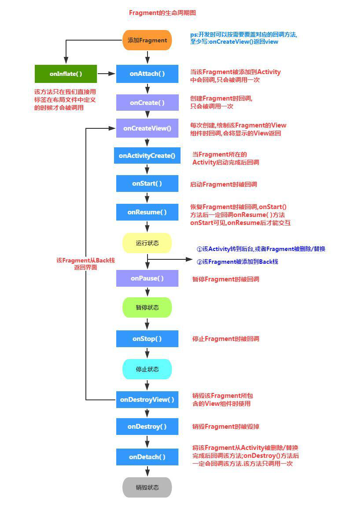

Android-Fragment(下)
Fragment与Activity
- Fragment可以调用getActivity()方法获取他所在的Activity，Activity可调用FragmentManager的findFragmentById()或findFragmentByTag()来获取Fragment
- 在Activity运行过程中，可调用FragmentManager的add()、remove()、replace()等方法动态的添加、删除或替换Fragment
- 一个Activity可以组合多个Fragment，一个Fragment也可被多个Activity复用
通常，创建Fragment需要实现下面三个方法
- onCreate(): 系统创建Fragment对象后回调该方法
- onCreateView(): Fragment绘制界面组件时回调该方法
- onPause(): 用户离开该Fragment时将会回调该方法
Fragment的生命周期
- onAttach(): 当该Fragment添加到它所在的Context时被回调。该方法只会被调用一次
- onCreate(): 创建Fragment时被回调。该方法只会被调用一次
- onCreateView(): 每次创建、绘制该Fragment的View组件时回调该方法，Fragment将会显示该方法返回的View组件
- onActivityCreated(): 当Fragment所在的Activity被启动完成后回调该方法
- onStart(): 启动Fragment时回调
- onResume(): 恢复Fragment时回调，在onStart()方法后一定会回调onResume()方法
- onPause(): 暂停Fragment时被回调
- onStop(): 停止Fragment时被回调
- onDestoryView(): 销毁该Fragment所包含的View组件时调用
- onDestory(): 销毁Fragment时被回调。该方法只会被调用一次
- onDetach(): 将该Fragment从它所在的Context中删除、替换完成时回调该方法，在onDestory()方法后一定会回调onDetach()方法。该方法只会被调用一次
